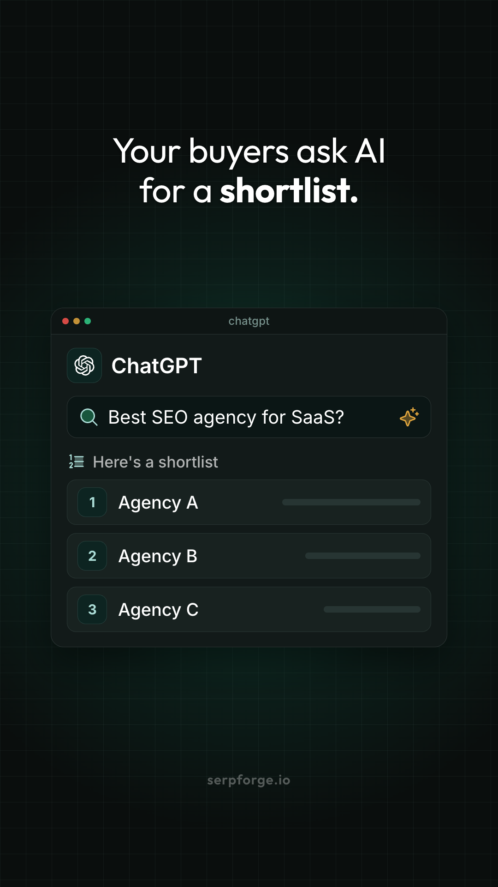
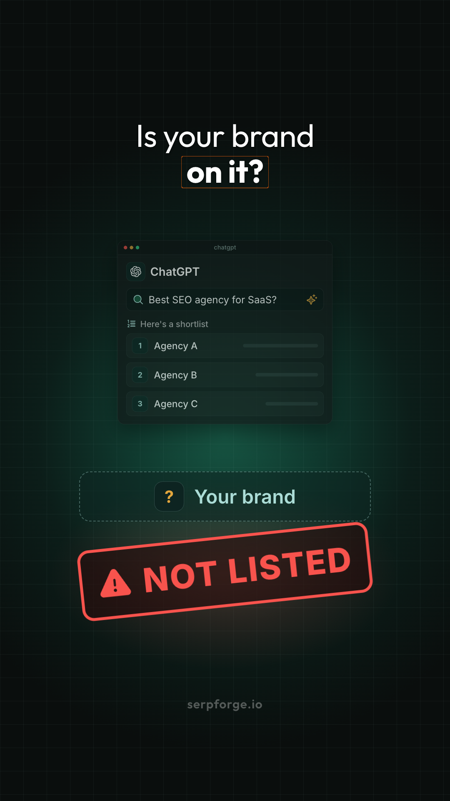
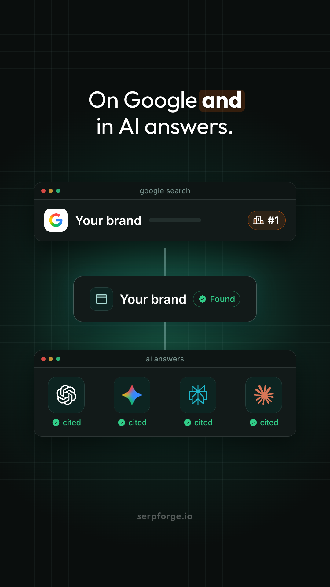
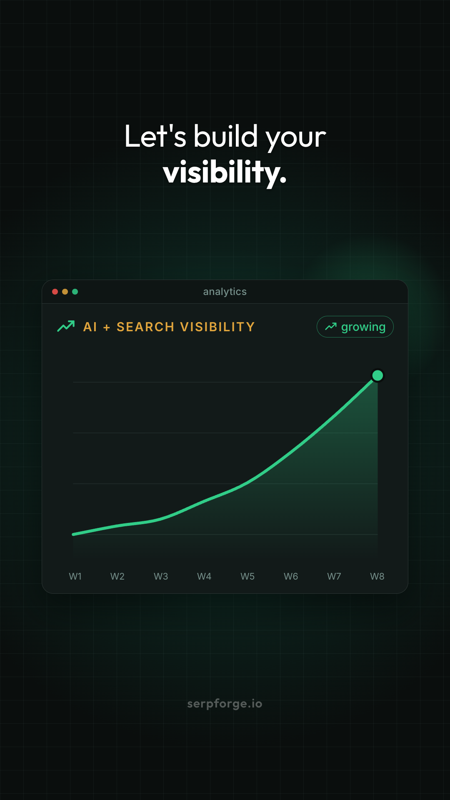

| Audio | "Your buyers ask AI for a shortlist." |
|---|---|
| Transcription Zone | "Your buyers ask AI / for a *shortlist.*" (white Outfit 400, 76 px, 2 lines; "shortlist." bold). On screen from frame 0. |
| Format | F6 Real UI card |
| Visuals Zone | one window card "chatgpt" (860 px wide, centred). Body: a header row (ChatGPT logo tile + "ChatGPT"), a prompt row (search icon + the question + sparkle), then the answer: "Here's a shortlist" with the list-numbers icon and three ranked rows. - LOGO: ChatGPT (theSVG openai, white on deep tile) - header row - ICON: phosphor magnifying-glass duotone (mint) + sparkle duotone (amber) - prompt row - ICON: phosphor list-numbers duotone (mint) - answer header |
| Text | "ChatGPT" (Inter 600 46 px), "Best SEO agency for SaaS?" (Inter 400 42 px), "Here's a shortlist" (Inter 500 34 px, mist), rows "Agency A / B / C" (Inter 500 38 px) with rank tiles 1-3 (Inter 700). Window title "chatgpt" (Inter 500 24 px). |
| Animation | window rises 40 px + scale 0.94-1 + blur 8-0, 0.6 s OUT, landing on "ask" 0:00.99. The question types in 0:01.00-1.50. Answer header fades up 0:01.55 (0.4 s SOFT). Rows build in one by one (fade + y 24 + scale 0.96, 0.45 s SOFT) on "shortlist" 0:01.89 / 1.97 / 2.05. Stage drifts up 16 px over the scene (INOUT). |
| Handover Out | carry - the transcription fades 0:03.50-3.80; the window shrinks to 0.6 and moves up 235 px (0.6 s INOUT, 0:03.80-4.40) and stays as context in s02. |
| Effects | colour drop; soft window shadow. |
| Sfx | click (typing) 0:01.00 -30 dB · pop 0:01.89 -24 dB (rows land) · whoosh peak 0:04.00 -22 dB (carry) |

| Audio | "Is your brand on it?" |
|---|---|
| Transcription Zone | "Is your brand / *on it?*" (white Outfit 400, 76 px; "on it?" bold in an orange selection frame) |
| Format | F2 Stamp |
| Visuals Zone | the carried, smaller chatgpt window (0.6 scale) at the top of the zone; below it a dashed "Your brand" row that appears empty; then a large rotated stamp "NOT LISTED" in red with the warning icon, landing over the lower half. - ICON: phosphor warning fill (red) - inside the stamp |
| Text | "Your brand" (Inter 600 44 px, sage) with "?" tile; stamp "NOT LISTED" (Inter 800 96 px, red, +4 % tracking). |
| Animation | words fade in on their times (Is 0:04.24, your 4.29, brand 4.71, on it? 5.24); the selection frame draws on 0:05.24 (0.3 s). The "Your brand" row fades + rises 24 px on "brand" 0:04.71 (0.45 s SOFT). The stamp lands on "on" 0:05.24: scale 1.25-1, rotation -12 to -6 deg, opacity 0-1, blur 6-0, 0.5 s OUT (no bounce). The carried window dims to 70 % at 0:05.24. |
| Handover Out | soft crossfade 0:05.70-6.10 (out: opacity 0, blur 6, scale 0.96 in 0.4 s; s03 in from scale 0.94 over 0.5 s). |
| Effects | faint red glow behind the stamp. |
| Sfx | pop 0:04.71 -24 dB (row) · sub-drop 0:05.24 -18 dB (stamp) · whoosh peak 0:05.95 -22 dB (crossfade) |
| Audio | "SERP Forge gets SaaS brands found" |
|---|---|
| Transcription Zone | "SERP Forge gets / SaaS brands / *found.*" (white Outfit 400, 64 px, 3 lines; "found." Playfair italic gradient accent) |
| Format | F6 Real UI (real image) |
| Visuals Zone | a browser window card titled "serpforge.io" filling the zone width, showing the real SERP Forge homepage hero (the user's own screenshot). Below it, a "search" window with the serpforge.io result (logo, domain, title "SERP Forge: SEO and AI visibility for SaaS") builds in on "SaaS" 0:07.23, and a green "Found" chip with the seal-check icon lands in it. - IMAGE: serpforge.io homepage hero, user's own screenshot, image.py look screenshot, 3 % push-in over the scene - ICON: phosphor seal-check fill (green) - "Found" chip |
| Text | window title "serpforge.io" (Inter 500 24 px); chip "Found" (Inter 600 32 px, green). |
| Animation | words fade in (SERP 6.14, Forge 6.48, gets 6.88, SaaS 7.23, brands 7.60, found. 8.18). The browser window fades + rises 40 px + scale 0.94-1, 0.65 s OUT, landing on "SERP" 0:06.14; the screenshot inside pushes in 1.00-1.03 over the scene (INOUT). The "Found" chip pops (scale 0.9-1 BACK, 0.35 s) on "found" 0:08.18. |
| Handover Out | carry 0:08.45-8.70 - both windows shrink to 0.6 and fade as the s04 hub (which keeps the "Found" chip) grows in their place. |
| Effects | colour drop; soft green glow at the chip. |
| Sfx | shutter 0:06.14 -22 dB (the real page is shown) · pop 0:08.18 -30 dB (Found; lowered by the voice-first check) · whoosh peak 0:08.60 -22 dB (carry) |

| Audio | "on Google and in AI answers." |
|---|---|
| Transcription Zone | "On Google *and* / in AI answers." (white Outfit 400, 76 px; "and" bold on an orange highlight box) |
| Format | F8 Flow / network |
| Visuals Zone | a small hub card in the middle ("Your brand" + browser icon + the green "Found" chip carried from s03). A connector draws up to a "google search" window (Google logo + "Your brand" + "#1" ranking chip); a second connector draws down to an "ai answers" window holding four logo tiles in a row (ChatGPT, Gemini, Perplexity, Claude), each with a green "cited" tick. - LOGO: Google (white tile), ChatGPT, Gemini, Perplexity, Claude (deep tiles) - ICON: phosphor browser duotone (hub), ranking duotone (#1 chip), check-circle fill (ticks) |
| Text | "Your brand" (Inter 600 40 px); window titles "google search", "ai answers"; chip "#1" (Inter 700 32 px); "cited" (Inter 500 26 px, green). |
| Animation | hub grows in (scale 0.6-1, 0.6 s INOUT, 0:08.70-9.30). Connector up draws 0:08.75-9.15 (SOFT); Google window lands on "Google" 0:08.85 (0.55 s OUT); "#1" chip pops 0:09.05 (BACK). Highlight box on "and" 0:09.52. Connector down draws 0:09.70-10.10; the AI window lands on "AI" 0:10.05; logo tiles build in 0:10.05 + 0.07 s each; ticks pop on "answers" 0:10.26 + 0.06 s each. |
| Handover Out | soft crossfade 0:11.10-11.35 out, s05 in 0:11.35-11.95. |
| Effects | connectors in mint at 40 %, a soft glow on the hub. |
| Sfx | pop 0:08.85 -24 dB (Google) · pop 0:10.05 -24 dB (AI row) · whoosh peak 0:11.35 -22 dB (crossfade) |

| Audio | "Let's build your visibility." |
|---|---|
| Transcription Zone | "Let's build your / *visibility.*" (white Outfit 400, 76 px; "visibility." bold) |
| Format | F7 Chart |
| Visuals Zone | an "analytics" window: header (trend-up icon + "AI + SEARCH VISIBILITY" + a "growing" chip), a smooth line chart with a soft green area under it, light gridlines and weekly ticks, the end point glowing. - ICON: phosphor trend-up bold (green) - header and chip |
| Text | "AI + SEARCH VISIBILITY" (Inter 600 30 px, amber, +10 %), "growing" (Inter 500 28 px, green), axis ticks "W1 ... W8" (Inter 400 22 px, sage). No made-up numbers. |
| Animation | window fades + rises (0.6 s OUT) landing on "build" 0:11.77. Gridlines fade 0:11.80. The line draws 0:11.80-12.52 (INOUT), ending on "visibility" 0:12.52 where the end dot pops (scale 0.6-1, 0.35 s) and the area fades up (0.4 s). Chip fades in 0:12.60. |
| Handover Out | soft crossfade 0:13.35-13.75. |
| Effects | green glow at the end point. |
| Sfx | riser ending 0:12.52 -24 dB (builds into "visibility") · whoosh peak 0:13.55 -22 dB (crossfade) |
| Audio | "serpforge.io" |
|---|---|
| Transcription Zone | "*serpforge.io*" (Playfair italic gradient, 84 px) |
| Format | F17 CTA |
| Visuals Zone | the SERP Forge logo (native size), the line "Get found by / *AI and Google.*" (Outfit 700 64 px + Playfair italic) and the orange "serpforge.io" pill with the cursor-click icon. Outro scene: Outfit, not Inter. - LOGO: SERP Forge white (brand/logos) - ICON: phosphor cursor-click duotone (orange) - pill badge |
| Animation | crossfades in 0:13.55; logo 0:13.60 (0.5 s OUT); line 0:13.80; the pill lands on "serpforge.io" 0:14.12 (scale 0.92-1, 0.5 s OUT); badge 0:14.40. Holds still 0:14.6 to the end. |
| Handover Out | none (ends on the held frame). |
| Effects | warm orange glow under the pill. |
| Sfx | sub-drop 0:14.12 -18 dB (URL / logo lands) |